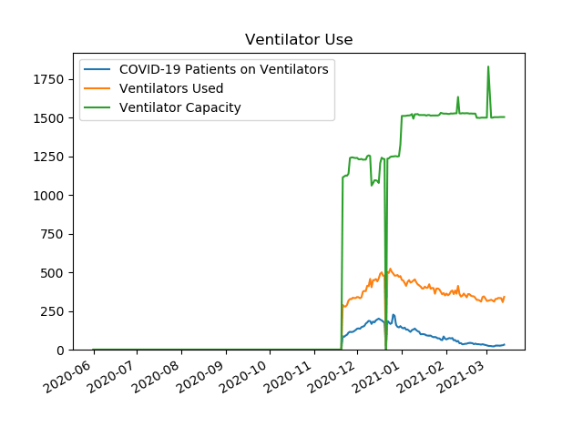

Active COVID-19 Hospitalizations in Southwest
Data is from
PA Dept Of Health
COVID-19 Current Hospitalizations
Date
COVID-19 Patients Hospitalized
COVID-19 Patients on Ventilators
COVID-19 Adult Patients in ICU
20201121
750
86
225
20201201
1090
135
252
20210101
1253
142
325
20210127
677
73
153
Ventilator Use
Date
COVID-19 Patients on Ventilators
Ventilators Used
Ventilator Capacity
20201121
86
288
1113
20201201
135
340
1239
20210101
142
450
1510
20210127
73
389
1517

Available Hospital Beds
Date
Airborne Isolation
Pediatric ICU
Adult ICU
Medical/Surgical
Pediatric
20201121
212
10
196
1040
78
20201201
219
21
152
811
115
20210101
302
15
148
963
128
20210127
302
14
141
792
71
Available & Total Adult ICU Beds
Date
Available Adult ICU Beds
Total Adult ICU Beds
20201121
196
1071
20201201
152
1020
20210101
148
827
20210127
141
779
Available & Total Airborne Isolation Beds
Date
Available Airborne Isolation Beds
Total Airborne Isolation Beds
20201121
212
726
20201201
219
768
20210101
302
893
20210127
302
997
Available & Total Medical/Surgical Beds
Date
Available Medical/Surgical Beds
Total Medical/Surgical Beds
20201121
1040
4837
20201201
811
4715
20210101
963
5042
20210127
792
5013
Available & Total Pediatric Beds
Date
Available Pediatric Beds
Total Pediatric Beds
20201121
78
264
20201201
115
260
20210101
128
259
20210127
71
239
Available & Total Pediatric ICU Beds
Date
Available Pediatric ICU Beds
Total Pediatric ICU Beds
20201121
10
48
20201201
21
48
20210101
15
48
20210127
14
69